For those new to Zendesk: Views are the tool you would use to manage tickets inside Zendesk. It lets us “filter” the tickets we see. For example we can have a view that just lists Open tickets that are 48 hours or newer, categorized based on the assignee, and sorted based on the time of the latest update.
When operating from Zendesk, it’s best to work from your views tab to get the work done quickly and efficiently.
There are three different kinds of views within Zendesk:
- Default views, these are automatically applied by Zendesk. (Tip: You can deactivate and edit most of them except the “Suspended Tickets” and “Deleted Tickets” views)
- Shared views, meant to be used and viewed by everyone (You can create up to 12)
- Personal views, these are more private and set up by each user to match what they need to prioritize. (Each agent can create up to 8)
In this post, we’ll be walking through simplifying your Default views and adding some Shared ones.
Default views vs. Recommended views
When you start off using Zendesk, you will be set up with an predefined (default) set of views.
- Your unsolved tickets
- Unassigned tickets
- All unsolved tickets
- Recently updated tickets
- Unsolved tickets in your groups (not available on Essential)
- New tickets in your groups (not available on Essential)
- Pending tickets
- Recently solved tickets
While these are great to kick off, we’d recommend streamlining to make the time spent in your inbox as efficient (and straight forward) as possible. Our recommendation:
- Your Open and New tickets
- Unassigned new and open
- Your pending tickets
- All pending tickets
- Recently updated
So - let’s get started!
Opening Views
It’s a good idea to get familiar with the view area - where it’s located, what it’s made up of and all that good stuff:
-
Click on cogwheel icon on bottom left corner to open Admin menu.
-
Click Views
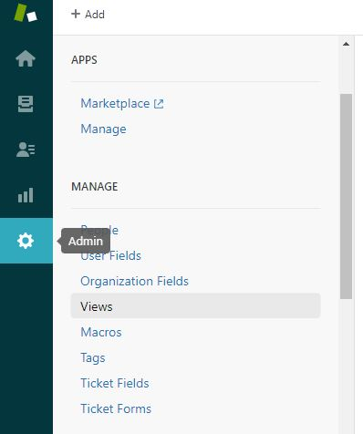
- This is how the Views page looks like:
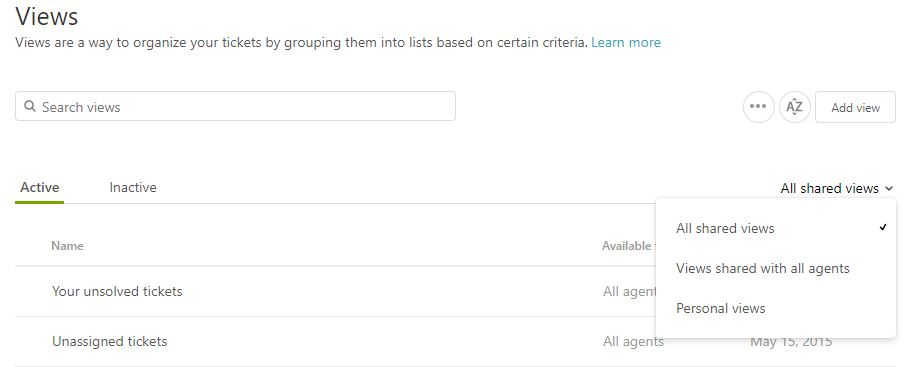
You can search a particular view by name using the search bar, see what’s active (currently used) and inactive, and filter based on what kind of Views they are. You can also Add View using the “Add View” bottom at the top right.
- Views components
This is how the “Add View” page looks, we’ve broken the page into two, so we can better focus on the important areas:
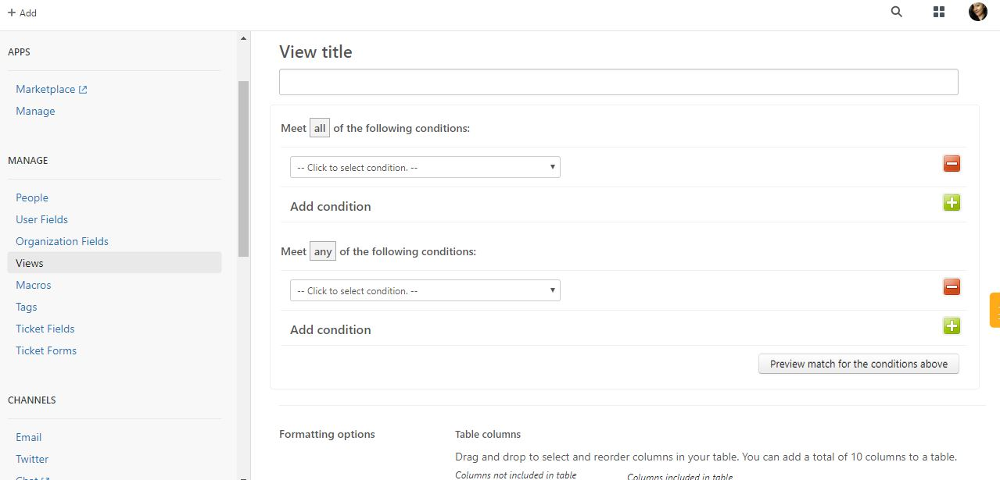
Deactivating a view
Before we start setting up the recommended views, we need to deactivate the ones we won’t be using.
To deactivate a specific view, simply hover your mouse over the view you wanted to disable.
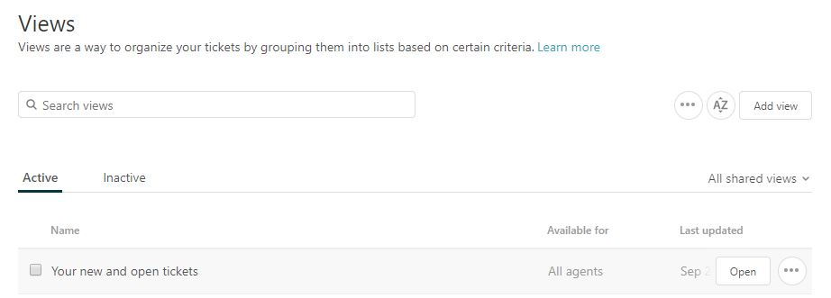
Once you ticked the box, the deactivate button will appear on the top right side - click that to deactivate.
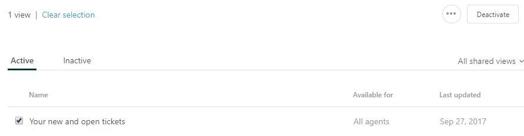
That’s how you deactivate, in a tidy little parcel. Repeat that for all the views you want to deactivate - then we will move onto…
Creating your new views
1. Your new and open tickets
Your open and new tickets is essentially “Your unsolved tickets”, “Unsolved tickets in your groups” and “New tickets in your groups” all rolled up into one. Here’s the settings you need to make it happen.
The conditions you will need are:
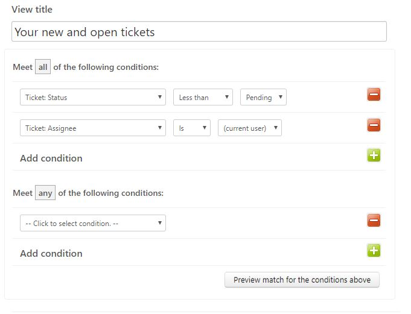
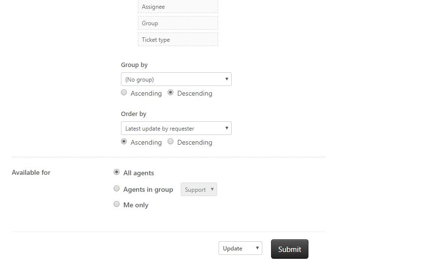
Once you click Submit, the new Views will appear.
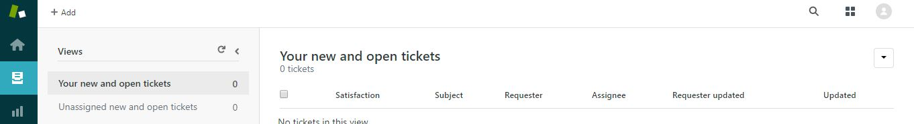
2. Unassigned new and open tickets
While pretty similar with the New and Open tickets view, this view will show ALL tickets (not just your own) so you can monitor all of your Support team’s workloads.
This means, you can also jump into a ticket and take it if it’s been waiting a while.
The conditions you will need are:
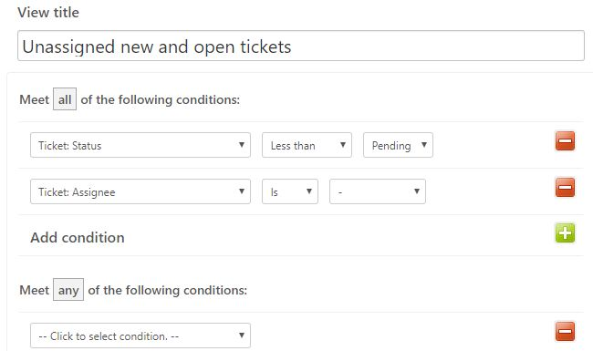
3. Your Pending tickets
Your Pending tickets will show you all of YOUR queries that you’ve set as Pending. Maybe you’re waiting for the customer to get back to you, or maybe you need to get info from a separate department in the company.
Example: a customer came to ask if a product is back in stock yet. You need to check with your warehouse people first so you promised the customer that you’ll check in again soon- hence, you marked it as pending.
Having this view will make it easier to keep track of all the backlog.
Here are the conditions you need:
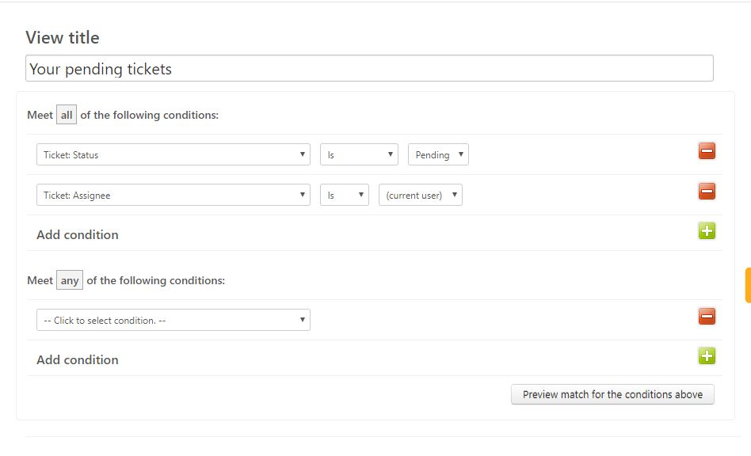
4. All pending tickets
This one is more or less the exact same function as “Your pending views” but it allows you to see all of your teammate’s Pending backlog as well. This can be super useful during holiday season, flu season or any season when you are down a couple of staff.
The conditions you will need are:
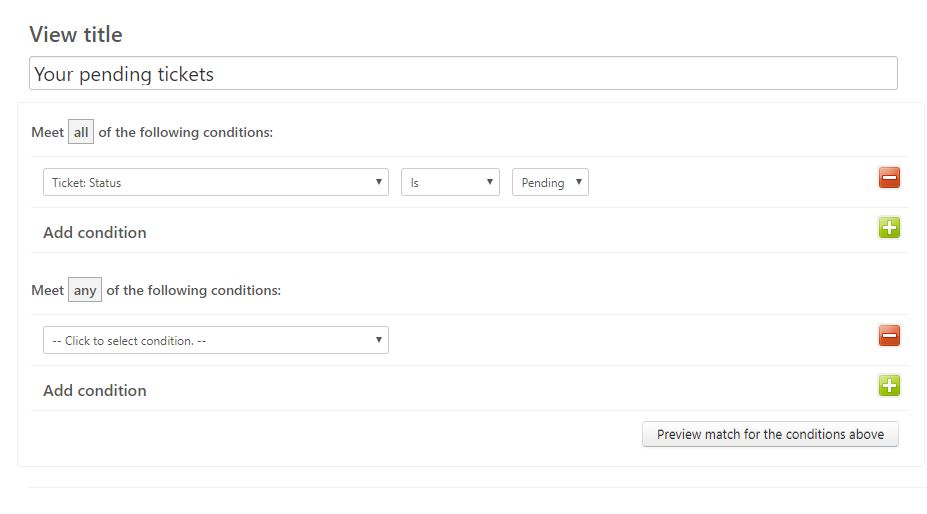
5. Recently updated
Recently updated view is good to keep track of all the new updates or queries from the customer, all the replies sent back by our team in the last 24 hours, and generally useful for QA purposes, which will allow you to easily review work errors, or if there’s any areas to focus on for improvements.
To create a view that records based on the recent activities, here are the conditions you’ll need.
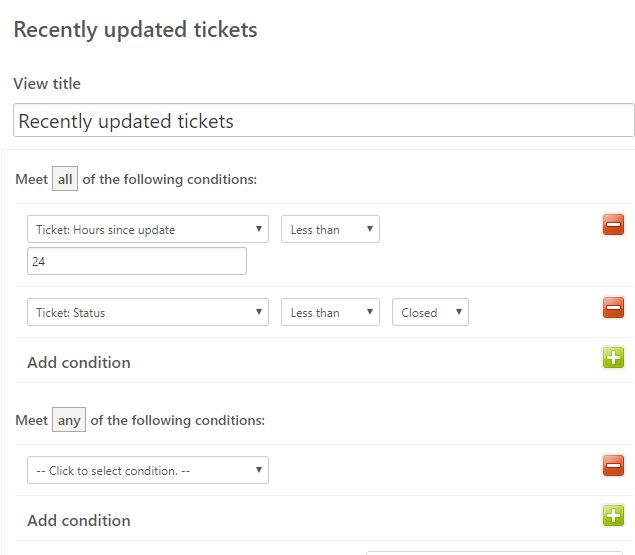
Note that you can freely set the hours to fit your needs. It can be 168 hours for all updates in the last week, 336 for two weeks, or maybe 72 for the last 3 days. That’s up to you!
Other useful views
Solved in the last 30 days
Similar to “Recently updated”, this view is typically used for reviews and QA- it shows all the solved conversations in the last 30 days.
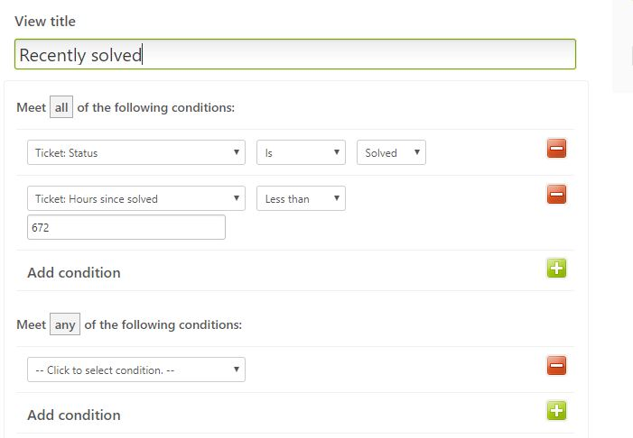
Bad-rated tickets
For this view to work, you will need to have CSAT turned on within Zendesk. A bad-rated tickets view will allow you to track any bad feedback from your customers - being able to identify these emails immediately can be a really great tool when looking to turn that customer experience around.
If you haven’t turned CSAT on yet, we have a tutorial for that ;-)
When a customer leaves a Bad rating with a comment they’re usually unhappy with the product or their customer service experience. If it’s the latter, then their comment could contain valuable feedback for us that can be used as a training and reflection opportunity.
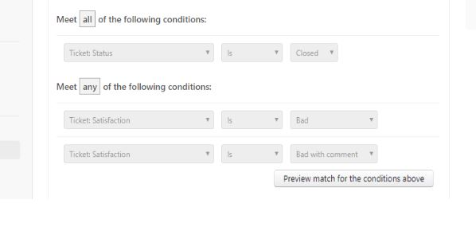
And once you click submit, you will have a new view that sorts only your bad rated tickets!
Views based on tags: Using tags to collect a ticket category
We can use the tagging feature in Zendesk (for more info, please see here) to create a view for all tickets related to that tag. For example, if all feature requests are tagged as “feature-feedback”, we’ll be able to put it into a view.
Another common way to use it is to group Refund tickets together. (Under “refund” tag)
Here’s the condition you’ll need.
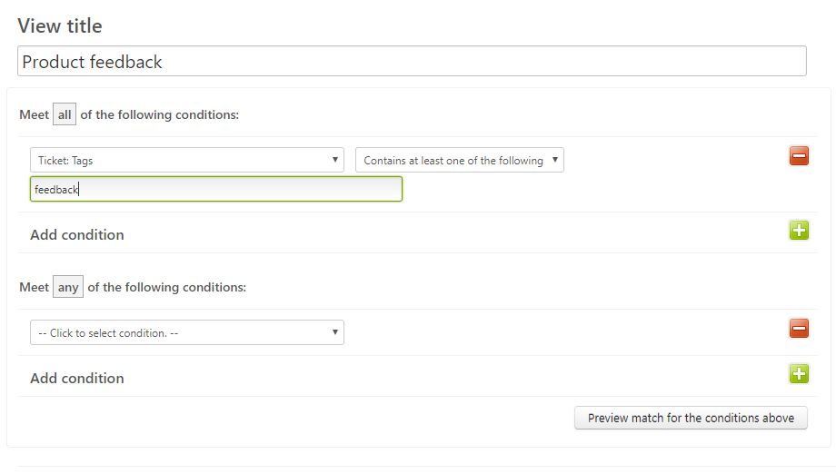
Tips when finalizing a view
Columns
The Columns included in every view’s Formatting Options > Tables should consist of: Subject, Requester, Request date, Latest update by requester and Assignee.
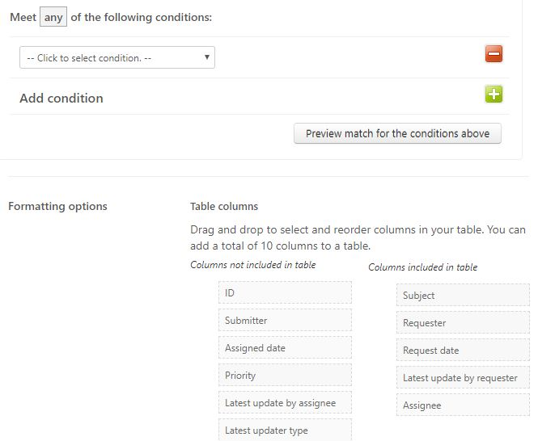
And they will look like this!
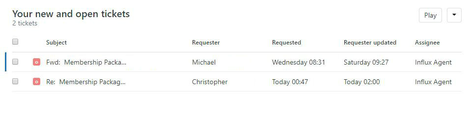
Group and Order
Group by should be ‘No group’ with Descending option, while Order by should be ‘Latest update by requester’ with Ascending option
See below:
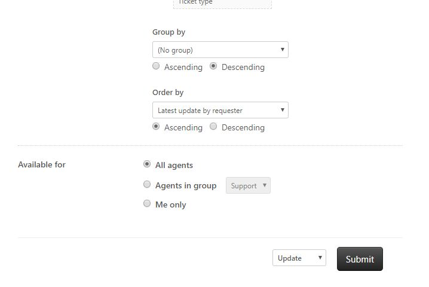
And those are all your tips and tricks! If you got to this point - thanks for sticking around! ;-)
More Zendesk Tutorials
Find this tutorial helpful? We’ve published a few more:
If you would like to find out more about how we can help you with your support experience - get in touch!